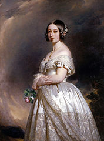
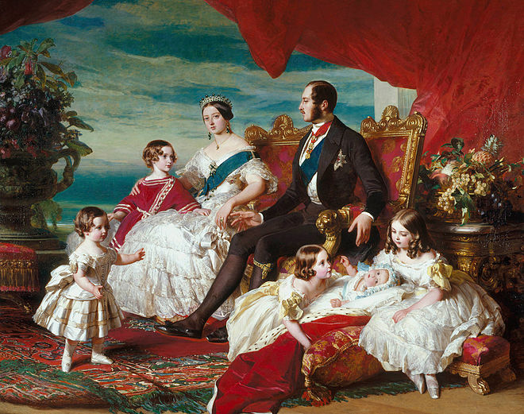

XXV - Nữ Hoàng VICTORIA
NỮ hoàng Anh Quốc hiện nay, Elizabeth II, là cháu ba đời của một vị Nữ hoàng lớn nhất trong lịch sử nước Anh từ xưa đến nay: Victoria. Sinh năm 1819, chết năm 1901 (thọ 82 tuổi), bà lên ngôi từ năm 18 tuổi (1837), một tay bà cai trị Đế quốc Anh trong 61 năm, đã làm cho nước Anh từ một nước yếu đuối ít mở mang, trở nên một cường quốc hùng cường nhất của thế giới từ giữa thế kỷ XIX đến đầu thế kỷ XX được toàn thể nhân dân Anh nhiệt liệt sũng bái, và cả thế giời kính phục.
Không phải như Nữ hoàng Catherine II của nước Nga, hay như Từ Hi Hoàng thái hậu của Trung quốc mà đời tư bừa bãi về tình duyên dù sao cũng để lại một vết nhơ trong lịch sử của họ, Nữ hoàng Victoria đã nêu một gương xán lạn về tài hoa cũng như đức hạnh trên cả hai phương diện chính trị và gia đình: trung thành với tổ quốc và dân tộc Anh như thế nào bà cũng thủy chung với chồng bà như thế ấy, chứng tỏ một vị Nữ chúa oai nghiêm, và hiền hòa, một người vợ âu yếm, một người mẹ gương mẫu, một bậc phụ nữ tài giỏi vào bậc nhất trong Lịch sử nước Anh va Lịch sử nhân loại.

18 TUỔI LÊN NGÔI
Không ai ngờ một cô công chúa từ nhỏ tới giờ chỉ biết chúi mũi vào sách học, bỗng dưng được lên ngôi vua, đã tỏ ra một thái độ bình tĩnh và oai nghi như công chúa Victoria.
Ngày 20 tháng 6 năm 1837, hồi 5 giờ sáng, công chúa còn đang ngủ trong lâu đài Kensington, thí giáo chủ ở Canterbury và viên Thị Vệ Đại thần của Anh triều đến gõ cửa. Mẹ của công chúa là nữ Công tước Kent vội vàng đánh thức con gái dậy. Nàng điềm nhiên khoác tạm chiếc áo dài, và thong thả đi một mình ra phòng khách.
Viên Thị Vệ Đại thần quỳ xuống trước mặt Công chúa và kính cẩn báo tin để nàng biết theo Hiến pháp Anh, từ giờ phút này nàng là Nữ hoàng của Anh quốc. Nàng mỉm cười duyên dáng gật đầu, không nói một lời. Cô Công chúa 18 tuổi không ngạc nhiên, không tỏ vẻ vui mừng, không sợ sệt.
Đúng 11 giờ, thủ tướng Melbourne đến đón nàng,tới chủ tọa Hội đồng chánh phủ đầu tiên của nàng. Tất cả Triều đình hồi hộp đợi chờ, bỗng hai cánh cửa mở rộng, lính thị vệ hô to: “Nữ-Hoàng”, toàn thể các vì Tổng trưởng, Đại tướng. Đô đốc đều đứng đậy: từ ngoài cửa bước vào một thiếu nữ, thướt tha mảnh khảnh, để tang cho cha, đi mạnh dạn, điềm nhiên, đến ngồi trên Ngai vàng. Với một giọng thật rõ ràng, thật chững chạc, và êm đềm duyên dáng, nàng đọc bài huấn từ đầu tiên để khai mạc Hội đồng chánh phủ.
Xong, vẫn nét mặt điềm tĩnh và dịu hiền không thay đổi, vị Nữ Hoàng trẻ tuổi chào mọi người, và bước ra và giữa những cặp mắt ngạc nhiên và kính phục của tất cả các nhân vật chánh phủ.
Ngoài đường, dân chúng vỗ tay reo mừng ầm ĩ, và bài quốc thiều “cầu Chúa cứu Nữ hoàng!” (God save the Queen)- được hát lên vang dậy cả kinh thành London và khắp nước Anh.
Về tới cung điện, vừa gặp mẹ, nàng hỏi:
- Má ơi, hôm nay con đã thật là Nữ Hoàng nước Anh rồi phải không?
- Con đã thấy rõ rồi.
- Thế thì má hãy để con ngồi một mình trong một tiếng đồng hồ.
Ai cũng biết từ lúc nhỏ đến bây giờ, Công chúa Victoria luôn luôn ở bên cạnh mẹ. Lúc học, lúc chơi, lúc ăn, lúc nghỉ, đều có mẹ kèm một bên. Nữ Công tước Kent săn sóc cho con gái từng ly từng tí, nhất là về trí dục và đức dục. Nhưng bây giờ công chúa đã là Nữ hoàng, cử chỉ đầu tiên của nàng là tỏ cho mẹ và mọi người thấy rõ rằng nàng sẽ là một vị Nữ hoàng cương quyết, thông minh, không chịu ảnh hưởng của ai hết, chỉ biết quyền lợi của nước của dân, và danh dự và bổn phận của một vị Quốc trưởng. Sau khi suy nghĩ một tiếng đồng hồ, nàng truyền lịnh đưa mẹ sang ở một lâu dài khác để nàng ở một mình trong Điện. Nàng muốn vị Nữ hoàng phải tự mình quyết định mọi việc quan trọng trong nước, không nên có mẹ, hoặc người nào khác ở bên cạnh và bầy biểu nọ kia
Mới 18 tuổi, vừa lên ngôi, Nữ hoàng Victoria đã có ý thức rõ rệt về trách nhiệm năng nề của mình đối với quốc gia và dân tộc, trước mặt thế giới.
Bà mẹ đã nuôi và dạy nàng từ nhở đến lớn, bây giờ đã hết nhiệm vụ, và không được xen vào việc nước. Đối với ông bác ruột của nàng là vua Léopold của nước Belgique, nàng cũng có thái độ cương quyết như thế. Và sau này, ngay đối với chồng, người chồng rất yêu là Albert, Nữ hoàng Victoria cũng không bao giờ để cho xen vào việc triều chính.
Và cô gái 18 tuổi ấy một mình đã nắm vững vận mệnh của đại cường quốc Anh trong 64 năm trời.
VỢ CỦA MÌNH ĐÂY, ALBERT!
Ba năm đầu từ khi lên ngôi, Nữ hoàng Victoria chưa muốn lấy chồng. Tuy lúc bấy giờ nàng đã có một người yêu trong đám các người anh họ của nàng, là hoàng tử Albert, con ông bác ruột, Leopold, vua nước Belgique, nhưng nàng không nghĩ đến chuyện hôn nhân. Nàng yêu Albert nhất trên đời, và hồi 17 tuổi, nàng đã chép trong nhật ký: “Ta yêu anh Albert nhiều lắm, nhiều lắm, nhiều hơn hết thảy các người anh họ khác. Albert đẹp quá, đẹp quá, với đôi mắt xanh xanh, đôi môi ngon lành, hai hàm răng trắng nõn, trắng nõn.”
Nhưng khi lên ngôi rồi, Victoria do dự chưa muốn lấy chồng. Nàng muốn một mình đóng vai Nữ hoàng trong một thời gian hoàn toàn tự chủ, không bị một thế lực nào, hay một ảnh hưởng nào làm sai lạc nhiệm vụ khó khăn và quan trọng của nàng.
Đã nhiều lần, nàng đã tỏ cho vị Thủ tướng lão thành của chánh phủ thấy ý chí cương quyết của nàng, muốn làm theo ý mình, miễn là không trái với Hiến Pháp và không hại đến quyền lợi của quốc gia.
Nhưng được ba năm, chính phủ, dân chúng, triều đình, ai nấy cũng yêu cầu Nữ hoàng lo việc gia thất.
Năm 1840, nàng báng lòng kết hôn với hoàng tử Albert, người anh họ của dòng dõi Saxe - Cobourg ở Đức. Albert là một chàng trai giàu tình cảm nhưng nghiêm khắc, thích đời song gia đình, ưa âm nhạc, thích giao du với các văn nghệ sĩ tài hoa, nhưng lại ghét đàn bà và nhất là những đàn bà hay làm dáng hoặc lẳng lơ. Có những đêm đại hội, Nữ hoàng khiêu vũ cho đến sáng, còn Albert thì 10 giờ tối đã nằm ngủ trên ghế tràng kỷ trong Điện. Albert muốn tham dự vào việc nước, nhưng Nữ hoàng Victoria cho biết rằng Hiến pháp của Anh quốc không cho phép điều đó, và nàng cứ để chàng ở ngoài rìa việc chính trị.
Thỉnh thoảng, Albert thấy cần nói với vợ một đôi ý nghĩ của chàng về một vấn đề quan trọng, Nữ hoàng mỉm cười âu yếm, bá cổ chồng, vuốt ve chồng, và lẩm bẩm những câu: “Mình đáng yêu lắm … em yêu mình lắm…mình cưng của em…” Như thế, tức là Nữ hoàng thích nói chuyện yêu đương và hạnh phúc gia đình với chồng con hơn là nói chuyện chính trị. Albert hiểu ý vợ, đành làm thinh vậy. Ai cũng biết Nữ hoàng yêu chồng say mê, và đối xử với chồng hoàn toàn là một người vợ dịu hiền tùng phục, trung thành và tận tụy
Một hôm Albert giận vợ, bỏ vào phòng riêng, đóng chặt cửa, Nữ hoàng Victoria cũng tức giận chạy theo, gõ cửa. Trong phòng, Albert hỏi:
- Ai đấy?
Victoria đáp:
- Mở cửa cho Nữ hoàng nước Anh.
Albert không thèm mở, làm thinh. Một lúc lâu, Victoria lại gõ cửa. Lại có tiếng Albert hỏi:
- Ai đấy?
- Vợ của mình đây, Albert! Mở cửa cho em.
Bấy giờ Albert mới mở cửa cho vợ. Victoria phục người chồng cương quyết, liền ôm lấy chồng, hôn lấy hôn để để rồi xin lỗi chàng. Từ đó về sau, Nữ hoàng Victoria thỉnh thoảng nghe lời chồng về một vài vấn đề quan trọng khó giải quyết. Trong tập nhật ký của bà, bà có ghi: “Albert rất quý báu của ta, Albert là không ai so sánh được…”

Ở gần chồng, nhận thấy Albert là một người đàn ông thông thái, hiểu biết sâu rộng, tính tình lãng mạn nhưng cao thượng, vị Nữ hoàng trẻ tuổi càng ngày càng yêu chồng, tỏ ra một cô vợ rất hiền lành và rất quý trọng chồng. Không những bây giờ bà đã để ông Hoàng Albert tham gia vào Quốc chánh, bà lại còn nghe lời Albert triệt để trong tất cả mọi việc, hoàn toàn tùng phục ông về mọi phương diện Quốc gia, Quốc tế và gia đình. Đến đổi triều đinh và dân chúng Anh quốc, cũng như các nhà ngoại giao trên thế giới đều ngạc nhiên rằng trước kia Nữ hoàng Victoria rất cương quyết, nhiều khi độc tài, mà từ khi lấy chồng được một năm bà đã hoàn toàn thay đổi, trở nên một người vợ rất ngoan ngoãn, hiền lành, quý trọng và phục tùng phu quân triệt để.
Những ngày rành công việc, bà cởi ngựa đi dạo chơi với Albert trên cánh đồng quê. Bà hỏi ông những điều bà không biết về các môn khoa bọc, văn học, lịch sử, và ông trả lời cho bà nghe thông suốt mọi vấn đề. Cứ mỗi lần đi dạo như thế, là Nữ hoàng Victoria được nghe phu quân Albert nói cho biết cây này tên là cây gì nó sống cách nào, hoa và trái của nó như thế nào, nó chịu những khí hậu nào, nó được dùng làm gì, đời sống của loài ong như thế nào, của loài kiến như thế nào, ai đã xây dựng lâu đài kia, tiểu sử của nhân vật ấy như thế nào, đây là quê hương của một thi sĩ tên là gì. Ở thế kỷ nào, và ông đọc cho bà nghe vài đoạn thơ hay của thi sĩ…
Nhờ vậy mà Nữ hoàng Victoria học hỏi thêm được rất nhiều về văn hóa.
Trong các đám tiệc lớn, các Đại sứ và Lãnh sự ngoại quốc cũng như các vị Bộ trưởng chinh phủ rất đỗi kinh ngạc được nghe Nữ hoàng Victoria nói chuyện thông suốt về nhiều vấn đề lịch sử, khoa học, văn học, địa dư, của thế giới tự cổ chí kim. Họ cũng biết vị lão sư thông thái của bà không ai khác hơn là ông Hoàng Albert!
Mùa đông trời rét buốt, không đi chơi được thì Nữ hoàng Victoria ở nhà ngồi thêu những tấm thảm, đan những áo len, và trong lúc ấy chồng bà đọc cho bà nghe lịch sử Hiến pháp của các quốc gia hùng cường trên thế giới. Ông vừa đọc, vừa giảng, so sánh với Hiến pháp nước Anh, và rút kinh nghiệm lịch sử trong việc chính trị, để cho bà hiểu và theo đó mà cai trị nước Anh.
Trước kia Nữ hoàng Victoria còn trẻ tuổi, ham khiêu vũ và đi xem hát, nhưng từ một năm sau khi sống chung với ông Hoàng Albert, nhiễm theo tính chồng, bà chỉ ở trong cung điện với ông, lo việc gia đình, săn sóc con cái, đánh đờn cho ông nghe, hoặc nghe ông giảng giải các vấn đề quan trọng.
Trong tập nhật ký của bà, Nữ hoàng Victoria có chép: “Cảm ơn Chúa! Cuộc đời của tôi bây giờ thay đổi hẳn. Bên cạnh Albert, tôi mới hiểu thế nào là chân hạnh phú!”.
Ông Hoàng Albert yêu vợ, chiều vợ, mà cũng có nhiều lần tỏ ra cương quyết với vợ để tránh cho bà vợ của ông một vài hành động sai lầm mà một người đàn bà, dù người ấy là Nữ hoàng nước Anh, thường tự mình không thấy rõ cái nguy hại về sau. Nữ hoàng Victoria luôn luôn vâng lời chồng. Trong quyển hồi ký của bà, bà có thú nhận rằng: “Nhờ ta vâng lời Albert mà tránh được các hành vi vụng về. À! Nếu không có Albert thì ta đã lầm lỗi biết bao nhiêu điều dại dột có hại cho vận mệnh Đế quốc Anh!”
Ông hoàng Albert rất thận trọng trong mỗi cử chỉ, điềm đạm trước mọi biến cố, và chu đáo giúp đỡ rất nhiều cho Nữ hoàng Victoria. Các nhà Sử học Anh quốc đều công nhận điều ấy.
Mỗi buổi sáng, ông dậy thật sớm, ngồi bàn làm việc một mình trong yên tĩnh, không muốn có ai quấy rầy. Trên bàn thắp một ngọn đèn xanh, cây đèn rất tiện mà ông mua bên Đức. Ông ghi chép các giấy tờ xem xét các bản báo cáo của các Bộ, đặt ra các sắc lệnh. Đến 8 giờ, Nữ hoàng ngủ dậy, vội vàng đến văn phòng coi công việc của chồng làm, vâng lời chồng về mọi vấn đề, âu yếm hôn chồng để cảm ơn, rồi ký tất cả các lệnh do chồng đã làm sẵn. Xong rồi hai vợ chồng vào phòng ăn điểm tâm.
Albert làm tất cả các việc của vợ. Ông lo từng chi tiết về công việc lưỡng viện, các Bảo tàng viện, về quân đội, về các trường đại học, trung học, tiểu học, các Hàn lâm viện Khoa học, các tổ chức kỹ nghệ, thương mãi, lao động, nông nghiệp cho đến cả các vấn đề lặt vặt về tiên công của thợ, và các loại phân để bón ruộng lúa mì...
Nữ hoàng Victoria sung sướng, thường tuyên bố với mọi người: “Xưa nay không một người vợ nào có được một ông chồng như Albert. Các đô thị, các thôn quê ở nước Anh và ở khắp đế quốc Anh và đâu đâu cũng có dấu vết bàn tay tài hoa của Albert và trí óc vĩ đại của Albert...”
Mấy nhà báo ở Luân Đôn đã phải viết, nửa thật nửa khôi hài; “Albert là vua nước Anh!”,
Mà thật thế, nhờ có ông Hoàng Albert, mà nước Anh dưới thời đại Nữ hoàng Victoria đã trở nên một đế quốc hùng cườrg nhất và có uy tín nhất trên thế giới. Dân chúng Anh hoàn toàn ngưỡng phục và tôn sùng vị Nữ hoàng hiền lành của họ mà họ nhiệt liệt hoan hô trong mọi thường hợp. Vì họ được hưởng một đời sống sung sướng, đầy đủ, tự do, thoả mãn về tình thân và vật chất. Đối với ông Hoàng Albert, họ rất tôn trọng, và trong nước không hề có một phe đảng nào chống đối lại chính sách của Nữ hoàng Victor và của chồng bà.
Nhưng vì ông làm việc quá sức để giúp đỡ vợ cai trị một đế quốc cường thịnh rộng lớn, nên ông trở nên yếu sức, và mau già. Ông đã sói trán, rụng tóc và lưng khòm. Nữ hoàng lại càng ngày càng mập hơn, vui tươi hơn, con cái càng đông đúc, quốc gia hùng cường thịnh đạt.
Nhưng ông Hoàng Albert vẫn có tính nghệ sĩ. Ông hay chán đời. Một hôm ông bảo vợ: “Mình tôi tin chắc chắn rằng nếu tôi đau nặn, tôi sẽ để cho đau rồi chết, chứ tôi không tranh đấu để sống.”. Nữ hoàng âu yếm hôn chồng và đáp: “ Em sẽ tranh đấu để cho mình sống.”

Một hôm, năm 1861, ông bị bịnh thương hàn trầm trọng. Các bác sĩ danh tiếng nhất lo chữa nhưng bịnh tình không thuyên giảm. Nữ hoàng ngồi luôn bên cạnh chồng, đọc tiểu thuyết cho ông nghe khuây khỏa và đánh đàn cho ông vui. Bà vẫn lạc quan tin rằng chồng bà không thể nào chết được. Ông mới 42 tuổi. Nhưng hôm sau, bà đang chủ tọa Hội đồng Nội các thi có quan cận vệ chạy đến cho biết ông hoàng Albet vừa trút hơi thở cuối cùng.
Vừa nghe tin, Nữ hoàng hét lên một tiếng kinh hoàng, như một con thú bị nạn, và ngã gục xuống ghế chết giấc. Người ta phải cấp cứu thật lâu ba mới hồi tỉnh được.
MỘT BÀ VỢ GÓA TRUNG THÀNH ĐẾN CHẾT
Nữ hoàng Vitoria góa chồng, còn sống được 40 năm nữa. Một mình bà đảm đương việc cai trị nước Anh cho đến 82 tuổi băng hà, năm 1901
Suốt 40 năm góa bụa, Nữ hoàng Victoria vẫn một mực trung thành với kỷ niệm của chồng, không một ngày nào, giờ nào bà quên được hình ảnh của người yêu. Suốt 40 năm, các gian phòng trong cung điện Buckingham từ hồi ông Hoàng Albert còn sống sắp đặt thế nào, bà để y nguyên như thế, không thay đổi một chiếc bàn, hay một lọ hoa. Cứ mỗi buổi sáng, mỗi buổi trưa, mỗi buổi chiều, và suốt 40 năm như thế, không một ngày nào quên lãng, đến bữa ăn là bà truyền lịnh phải đặt trên bàn ăn, ngay chỗ Albect thường ngồi trước mặt bà, những đĩa, muỗng, dao, nĩa, và khăn ăn, y như Alber còn sống. Sáng dậy, đến giờ Albert rửa mặt thường lệ, bà bắt phải pha nước nóng trong lavabo và mỗi bữa tối pha nước nóng trong phòng tắm vào đúng giờ chồng tắm như lúc ông còn sống. Trước khi đi ngủ, bà lấy bộ áo quần ngủ của chồng, sắp trên giường, như có ông hoàng Albert nằm thật bên cạnh bà.
Vua nước Belgique, có lần sang London viếng Nữ hoàng Victoria, có yêu cầu Nữ hoàng hoãn giờ tiếp kiến 10 phút. Nhưng Nữ hoàng không đồng ý. Bà nói thẳng với vua Belgique: “Tôi xin nhắc lại để Ngài hiểu cho rằng tôi triệt để tuân theo tất cả tập tục, giờ phút nghi lễ, cách thức sinh hoạt hàng ngày trong triều đình và trong cung điện do chồng tôi đã sắp đặt: tôi coi đó là lẽ sống của tôi, quyết định của tôi, tất cả những gì chồng tôi đã muốn, đã làm, đã bảo, nay mặc dầu chồng tôi không còn nữa nhưng tôi vẫn còn tuân theo. Không có uy quyền nào của nhân gian có thể yêu cầu tôi thay đổi một mảy may nào những cái gì chồng tôi đã muốn.”
Giờ phút nào nhắc đến chồng bà, bà cũng nói với các nữ quan hầu cận: “Albert yêu quý của ta... Hôm nay hoa hồng nở đẹp quá, à, nếu Albert yêu quý của ta còn sống...Hôm nay bát canh này chú bếp nấu ngon quá, à nếu Albert của ta còn... Trời hôm nay bắt đầu đổ tuyết rơi, à nếu Albert yêu quý của ta còn...” v.v...
Luôn luôn bà nhắc nhở đến “Albert yêu quý” của bà, và suốt 40 năm góa chồng, Nữ hoàng cứ như thấy chồng còn sống bên cạnh bà... cho đến đỗi tấm kiếng soi mặt của bà đã cũ quá rồi, đã vàng khè và đã lu mờ, vị quan hầu xin cho đổi tấm kiếng mới, Nữ hoàng trừng mắt bảo: “Không, không. Ngươi không biết rằng tấm kiếng này, Albert yêu quý của đã cùng soi mỗi ngày với ta tư?”
Năm Nữ hoàng Victoria được 80 tuổi, dân chúng muốn tổ chức rất long trọng lễ mừng đại thọ của bà, kéo nhau đến trước sân điện Buckingham, đông nghẹt có hàng mấy trăm ngàn người, vỗ tay hoan hô bà suốt mấy tiếng đồng hồ không ngớt, người ta thấy Nữ hoàng đứng trên bao lơn, khóc ròng rã. Toàn dân cảm động lại ho to lên lời chúc tụng và hát van lên bài quốc thiều “Chúa cứu Nữ hoàng!”
Nữ hoàng Victoria băng hà năm 1901, thọ 82 tuổi.